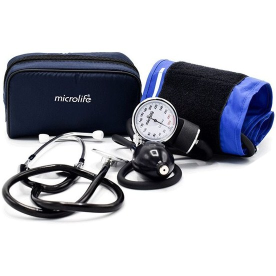

راهنمای کامل انتخاب فشارسنج خانگی
در دنیای امروز، داشتن یک ابزار دقیق و کاربرپسند در منزل میتواند نقش کلیدی در پیشگیری از بیماریهای قلبیعروقی داشته باشد؛ بنابراین شناخت انواع، معیارهای انتخاب، روشهای صحیح استفاده و نگهداری مناسب، ضروری است. اگر تا به حال در انتخاب فشارسنج دچار سردرگمی شدهاید، این مقاله تمام پاسخهای مورد نیاز شما را در قالب یک راهنمای جامع ارائه میدهد. با مطالعهٔ این مطالب، میتوانید بهترین گزینه را بر اساس نیازهای شخصیتان انتخاب کنید و طول عمر دستگاه را به حداکثر برسانید.
انواع فشارسنج
بازار فشارسنجهای خانگی بهطور گستردهای شامل چهار دستهٔ اصلی میشود: دیجیتال، آنالوگ (میکانیکل)، نیمهاتوماتیک و خودکار. هر کدام ویژگیهای خاصی دارند که بسته به سبک زندگی و سطح تجربه کاربر، میتوانند مناسب باشند. در ادامه به بررسی جزئیات هر نوع میپردازیم تا بتوانید بر پایهٔ نیازهای خود تصمیمگیری کنید.
فشارسنج دیجیتال:
فشارسنج آنالوگ:
فشارسنج نیمه اتوماتیک:
فشارسنج خودکار یا آرتمیک :
نمایشگر LCD یا LED با خواندن عددی واضح، قابلیت ذخیرهسازی چندین خوانش، هشدارهای صدا برای تشخیص نادرستگیری و اکثر مدلها باتری یا شارژپذیر هستند. برای کاربران خانگی که به سادگی میخواهند نتایج را ثبت کنند، گزینهٔ ایدهآلی است.
از یک منیمتر و یک پستسفیکس (مانند کاغذ یا صفحهٔ شیشهای) استفاده میکند. دقت بالا در دماهای بسیار سرد یا گرم، نیاز به مهارت در خواندن مقیاس دارد و معمولاً برای محیطهای بالینی یا افراد حرفهای توصیه میشود.
ترکیبی از فشارسنج دیجیتال و یک باند کشی (cuff) است که کاربر باید فشار باند را بهصورت دستی تنظیم کند؛ دستگاه سپس فشار را بهصورت خودکار اندازهگیری میکند. این نوع برای کسانی که میخواهند کنترل بیشتری بر فشار باند داشته باشند مناسب است.
باند بهصورت کامل توسط دستگاه پر و تخلیه میشود؛ کاربر فقط کافی است باند را بپوشد و دکمه را فشار دهد. این مدلها برای افراد مسن یا کسانی که توانایی تنظیم دستی باند ندارند، بهترین انتخاب هستند.
معیارهای کلیدی برای انتخاب فشارسنج مناسب
انتخاب فشارسنج مناسب نیازمند بررسی چند عامل اساسی است که میتواند تأثیر مستقیم بر دقت و راحتی استفاده داشته باشد. در این بخش، هر معیار را بهصورت عملی توضیح میدهیم تا بتوانید با اطمینان تصمیم بگیرید. در ادامه، مهمترین معیارهای خرید را بهصورت فهرستوار همراه با نکات کلیدی برای هر یک ارائه میکنیم.
دقت:
راحتی استفاده :
قابلیت ذخیره سازی داده:
قیمت و ارزش خرید:
برند های معتبر :
منبع انرژی:
بهدست آوردن نتایج نزدیک به مقادیر واقعی فشار خون؛ بهتر است دستگاه دارای گواهینامهٔ ISO یا CE باشد و در آزمایشهای مستقل مورد ارزیابی قرار گرفته باشد.
وزن و اندازهٔ باند، نمایشگر واضح، دکمههای بزرگ و قابلیت نصب بر روی بازوهای مختلف (دست چپ/راست) از عوامل مهم هستند.
برخی مدلها تا 100 یا 200 خوانش را ذخیره میکنند؛ این ویژگی برای پیگیری روند فشار خون در طول زمان بسیار مفید است.
قیمت باید متناسب با ویژگیها باشد؛ گاهی یک دستگاه با قیمت متوسط میتواند عملکرد بهتری نسبت به مدلهای گرانقیمت داشته باشد.
برندهای شناختهشده مانند Omron، Microlife، Beurer و Panasonic معمولاً خدمات پس از فروش و گارانتی مناسبتری ارائه میدهند.
باتریهای قابل تعویض یا شارژپذیر؛ بررسی عمر باتری و امکان استفاده از باتریهای استاندارد مهم است.
نحوه استفاده صحیح از فشارسنج
برای بهدست آوردن نتایج دقیق، رعایت یک سری مراحل ساده اما حیاتی ضروری است. این راهنما گام به گام به شما نشان میدهد که چگونه فشارسنج خود را بهدرستی بکار ببرید و از خطاهای رایج جلوگیری کنید. در ادامه، نکات مهم پیش از اندازهگیری و سپس مراحل دقیق اندازهگیری برای انواع فشارسنجها آورده شده است .
آمادگی قبل از اندازهگیری:
انتخاب زمان مناسب:
نصب باند بهدرستی:
استفاده از دستگاه دیجیتال:
استفاده از دستگاه آنالوگ :
پیشگیری از خطا:
حداقل 5 دقیقه استراحت کنید، از مصرف کافئین یا سیگار 30 دقیقه قبل خودداری کنید و اطمینان حاصل کنید که پاها بهصورت صاف روی زمین قرار دارند.
بهترین زمانها صبح بلافاصله پس از بیدار شدن و شب قبل از خواب هستند؛ این زمانها کمترین تغییرات فیزیولوژیکی را نشان میدهند.
باند باید حدود 2–3 سانتیمتر بالای آرنج قرار گیرد، بهصورت سفت اما نه بیش از حد فشرده باشد؛ اگر باند خیلی سفت باشد، فشار خون بیش از حد بالا نشان داده میشود.
دکمهٔ شروع را فشار دهید؛ دستگاه بهصورت خودکار فشار را افزایش میدهد، سپس بهصورت تدریجی فشار را کاهش میدهد و مقادیر سیستولیک و دیاستولیک را نمایش میدهد.
پس از پر کردن باند با پستسفیکس، سوزن منیمتر را بهدقت بخوانید؛ عدد سیستولیک در نقطهٔ اولین صدای «کلیک» و عدد دیاستولیک در نقطهٔ آخرین صدا ظاهر میشود.
دست را روی سینه یا در حالت فشرده نگه ندارید، باند را در همان مکان ثابت نگه دارید و از حرکت بدن در طول اندازهگیری خودداری کنید.
نگهداری و کالیبراسیون فشارسنج برای دقت بلندمدت
یک فشارسنج دقیق، تنها زمانی مفید است که بهدرستی نگهداری و بهصورت دورهای کالیبره شود. عدم مراقبت میتواند باعث انحراف نتایج و در نهایت تصمیمگیریهای نادرست پزشکی شود.
تمیز کردن باند:
ذخیرهسازی مناسب:
بررسی باتری:
کالیبراسیون دورهای:
استفاده از دستگاه آنالوگ :
بهروزرسانی نرمافزار:
پس از هر استفاده، باند را با یک پارچه نرم و خشک پاک کنید؛ از مواد شیمیایی قوی یا آب زیاد خودداری کنید تا از آسیب به لایهٔ کشی جلوگیری شود.
دستگاه را در جایی خنک، خشک و دور از نور مستقیم خورشید نگهداری کنید؛ باند را بهصورت سست و بدون فشار بیش از حد درون کیف یا جعبه بگذارید.
هر 6 ماه یکبار سطح باتری را چک کنید؛ در دستگاههای دیجیتال، هشدارهای کمبودن باتری معمولاً بهصورت صدا یا علامت نمایش داده میشود.
توصیه میشود هر 6 تا 12 ماه یا پس از 250 بار استفاده، فشارسنج را با دستگاه کالیبره معتبر یا در مرکز بهداشتی بررسی کنید؛ برخی مدلهای دیجیتال امکان کالیبراسیون خودکار با فشارسنج مرجع دارند.
پس از پر کردن باند با پستسفیکس، سوزن منیمتر را بهدقت بخوانید؛ عدد سیستولیک در نقطهٔ اولین صدای «کلیک» و عدد دیاستولیک در نقطهٔ آخرین صدا ظاهر میشود.
اگر دستگاه شما قابلیت اتصال به اپلیکیشن موبایل دارد، نرمافزار را بهروز نگه دارید تا از بهبودهای الگوریتمی و رفع باگها بهرهمند شوید.
مقایسه فشارسنج دیجیتال و آنالوگ: مزایا و معایب
انتخاب بین فشارسنج دیجیتال و آنالوگ بستگی به نیازهای خاص کاربر، محیط استفاده و ترجیح شخصی دارد. جدول زیر بهصورت واضح مزایا و معایب هر دو نوع را مقایسه میکند تا بتوانید تصمیمی آگاهانه بگیرید.
| ویژگی | فشارسنج دیجیتال | فشارسنج آنالوگ |
|---|---|---|
دقت |
دقت بالا در شرایط عادی؛ ممکن است در دماهای بسیار بالا/پایین کمی تغییر کند. | دقت بسیار بالا در تمام دماها؛ نیاز به مهارت خواندن مقیاس دارد. |
سهولت استفاده |
نمایش عددی واضح، دکمهٔ یکدست، ذخیرهسازی داده. | خواندن مقیاس بصری، نیاز به تنظیم فشار باند توسط کاربر. |
قابلیت ذخیرهسازی |
بله؛ اکثر مدلها چندین خوانش را ذخیره میکنند. | خیر؛ هر بار باید بهصورت دستی ثبت شود. |
قیمت |
متوسط تا بالا؛ بسته به برند و ویژگیها. | معمولاً ارزانتر؛ اما ممکن است هزینهٔ نگهداری (کالیبراسیون) بالا باشد. |
محدودیت های محیطی |
حساس به رطوبت و دمای شدید؛ نیاز به باتری. | قابلیت کار در دماهای بسیار بالا یا پایین؛ نیازی به منبع انرژی ندارد. |
مناسب برای |
کاربران خانگی، افراد مسن، افرادی که بهدنبال ثبت دورهای نتایج هستند. | پزشکان، مراکز بالینی، افرادی که تجربهٔ خواندن منیمتر دارند. |
تصویر |
 |
 |
نتیجه گیری
در پایان، میتوان گفت که شناخت انواع فشارسنج، معیارهای کلیدی انتخاب، روشهای صحیح استفاده و نگهداری منظم، کلید داشتن یک ابزار دقیق و قابل اعتماد در خانه است. با توجه به نیازهای شخصیتان—دقت، راحتی، قابلیت ذخیرهسازی یا قیمت—میتوانید بهترین گزینه را انتخاب کنید و از سلامت قلبیعروقی خود مراقبت کنید. اگر هنوز در انتخاب مطمئن نیستید، توصیه میکنیم یک مدل دیجیتال با گواهینامهٔ بینالمللی و قابلیت ذخیرهسازی داده انتخاب کنید؛ این ترکیب بهترین تعادل بین دقت، سهولت استفاده و هزینه را فراهم میکند. برای اطلاعات بیشتر یا مشاورهٔ تخصصی، میتوانید با متخصصین بهداشت یا فروشندگان معتبر تماس بگیرید.


نظرات و امتیازات